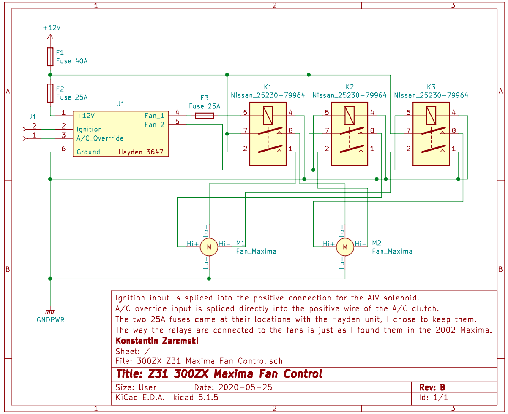
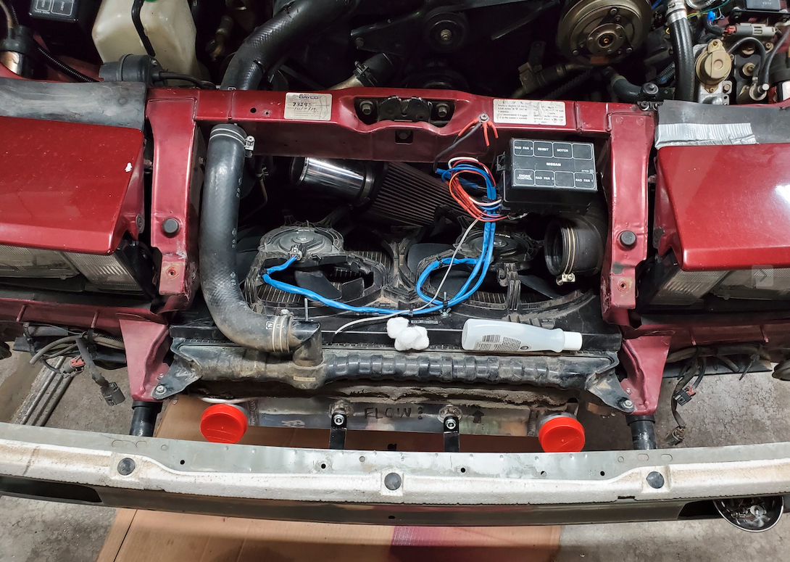

During our first day of class introductions, I mentioned that my favorite hobby was working on cars.
Although the physical work can be very frustrating and dirty, I actually look at this hobby the same way that I look at programming projects.
Since my project car's parts are long out of production and more importantly, out of date, I frequently retrofit newer parts to fit in the older application.
This requires creativity, problem solving, and learning mechanical and electronic skills that I would normally not encounter.
This webpage briefly details how I retrofitted electric radiator fans from a newer Nissan Maxima to fit on my 1986 300ZX Turbo.
The electric fan shroud from newer Nissan Maximas was measured to be the most appropriate for the footprint of the 300ZX radiator size. It is important that the fan shroud covers the radiator as much as possible to facilitate proper airflow and suction when pulling the air through the radiator.
There was a Maxima at my local junkyard. I was able to take the fans and relay control box home for 30 bucks!
I drew up a schematic for my own fan control circuit using a Hayden fan controller as the main driver. The Hayden controls the fan speed based on temperature, while the Nissan relays handle power to the fan. The relays can switch between low, medium, and high speeds, and I set it up to work with the Hayden outputs for a simple and reliable cooling setup.
Since the Hayden controller only has two outputs, I could only get low and high fan speeds, not medium. Even without the middle speed, the setup works great, giving plenty of airflow when needed.

To put everything together, I wired up the control circuit based on my schematic and got the relays and Hayden controller working. I cleaned the fan housing with a wire brush and some cleaner, redid the harness, cleaned up the shroud, and trimmed off unneeded mounting points. Once that was done, it was ready to go.
For the final installation, I ran a 12V power wire directly from the battery using 10AWG to handle the fan's 40A max draw during startup. I also connected trigger wires: one from the A/C to activate the fan when the air conditioning is on, and another from the ignition to ensure the system only runs when the car is on. Finally, I installed the temperature probe from the Hayden controller into the radiator fins to monitor coolant temperatures and manage the fan automatically. With everything wired and set up, the system works as intended.  In practice, these fans have been incredibly effective at keeping the engine cool, even during heavy use. They respond quickly to temperature changes and run much quieter than the old mechanical fan. On top of that, switching to electric fans freed up a significant amount of space in the engine bay, making it easier to work on the car and eliminating the clutter around the pulley driven fan setup. Overall, it's been a worthwhile upgrade.
Source code for this web page is available on my GitHub at this link: https://github.com/kzaremski/kzaremski.github.io/blob/master/public/cs1030/project1/index.html
The design is achieved through the Neumorphism UI Bootstrap Kit by Themesberg.